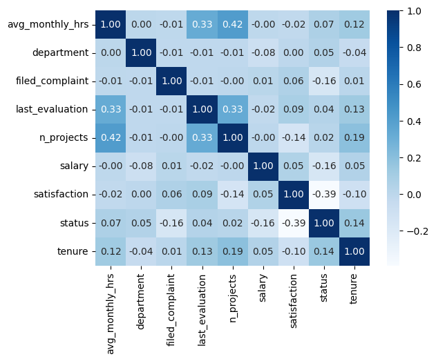

Overview

The main point of this project was to identify employees who are about to leave.
Given the variables at hand, I aimed to make an unbiased and comprehensive analysis.
This image represents the answer to my project. It was one of my first projects, and a significant amount of time was dedicated to machine learning, which was exciting.
However, I did not create a dashboard as I wanted to showcase my capabilities in Python and ML.
Steps Taken and Reasons
Steps I Took
- Step 1: Conducted basic EDA of the data
- Step 2: Preprocessed the data
- Step 3: Trained initial model
- Step 4: Visualized variable correlations using a heatmap
- Step 5: Improved the model's performance
Why These Steps
- Step 1: To gain initial insights and guide future analysis.
- Step 2: Ensure the data is in the correct format and error-free.
- Step 3: Test various ML models to predict employee churn rate.
- Step 4: Check relationships between dependent and independent variables.
- Step 5: Enhance the model's efficiency and reduce runtime.
Code file
Sample Visualizations
EDA Step
Training and Comparing
Recommendations
There are some key factors we should address:
- Satisfaction:
Conduct Regular Surveys Implement regular surveys to identify dissatisfaction trends. Keeping the surveys anonymous can encourage honest feedback.
- Career Development: Offer training programs, mentoring, and a career growth path for employees who want to achieve professional goals.
- Salary:
Performance-based compensation Implement performance bonuses such as commissions, stock options, or cash for employees who exceed expectations.
- Filed Complaints:
Address Complaints Promptly This is the most effective approach. Employees should feel heard, and there should be corporate action to resolve their issues.
Analyze the Nature of Complaints Categorize complaints to identify common themes, such as team conflicts, workload concerns, and harassment, to better understand root causes.